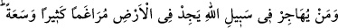
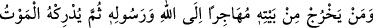
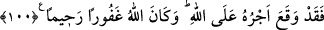
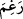
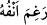

rubûbiyyet semâsının aydınlığına ubûdiyet sıfatı ile çıkaran velâyet sahibi birine
“hiçbir yol bulamayanlar müstesnâdır.” Onlar, iştiyak içinde bulunan orta halli
kimselerdir ki enâniyet hicâbıyla örtülü ve Hakk’ın cemâlini görmekten mahrumdurlar.
Allah keremiyle onları özürlü saymış, onlara rahmetini vadetmiş ve şöyle buyurmuştur:
“İşte umulur ki Allah onların” Allah’dan başkasında sükûn bulmasını ve Allah’tan
başkasına meyletmelerini “affeder. Allah” ezelde “çok affedicidir”, affı sebebiyle
kullukta kusur yapmalarına imkan vermiştir. “Çok bağışlayıcıdır”, bağışlaması
sebebiyle rubûbiyet hakkını yerine getirmeleri husûsunda onlara mühlet vermiştir. Bu
kısım “et-Te’vîlatü’n-Necmiyye”den alınmıştır.
100- Allah yolunda hicret eden kimse yeryüzünde gidecek bir çok güzel yer ve
bolluk (imkân) bulur. Kim Allah ve Rasûlü uğrunda hicret ederek evinden çıkar da
sonra kendisine ölüm yetişirse artık onun mükâfatı Allah’a düşer. Allah da çok
bağışlayıcı ve esirgeyicidir.
“Allah yolunda hicret eden kimse” ifâdesi, hicrete teşvik ve hicreti sevdirmek
içindir. “Allah’ın yolu” gidilmesi emredilen yoldur. “Yeryüzünde gidecek bir çok
güzel yer ve bolluk bulur”, yâni dolaşacağı ve hicret edeceği çok yer, bulur. Rızkı
bollaşır. Dînini yaşama ve yayma rahatlığı bulur. Hicrete teşviki teyid için bu ifâde
kullanılmıştır. Çünkü hicret eden kimse kendisini hicrete zorlayan kavminin
temennîsinin aksine gittiği yerde hayır ve nîmete kavuşur.
“
” zelillik ve değersizlik demektir. Asıl mânâsı, burnun yere yapışmasıdır.
Nitekim “Ergamallahu enfehû” = Allah burnunu yere yapıştırsın, sürtsün.” denilir.
İnsanın uzuvları içinde burun en değerlisidir. Toprak ise en değersiz görülen varlıktır.
Onun için “
= yâni burnu sürtülsün sözü zelillikten kinâyedir.
“Kim” kavminden, âilesinden ve çocuğundan ayrılarak “Allah ve Rasûlü uğrunda”
Allah’a ve Rasûlü’ne itâat için “hicret ederek evinden çıkar da sonra” kapısının
önünde bile olsa (evinden çıkmayı tercih etmesi hicret etmek istediğine delâlet
ettiğinden) maksadına ulaşmadan önce “kendisine ölüm yetişirse artık onun mükâfâtı
Allah’a düşer.” Onun mükâfâtı Allah katında vâcib bir iş gibi sâbit olur. “Allah da çok
bağışlayıcıdır.” Mağfireti bol olup ondan meydana gelen günahları bağışlar. Bu
günahlardan biri de o vakte kadar hicretten geri kalmasıdır. “ve esirgeyicidir” rahmeti
boldur, kulun hicret sevâbını tamamlayarak ona merhamet eder.
Rivâyet edildiğine göre; Rasûlullah (s.a.v) hicreti terk etmekten sakındıran bu âyetleri